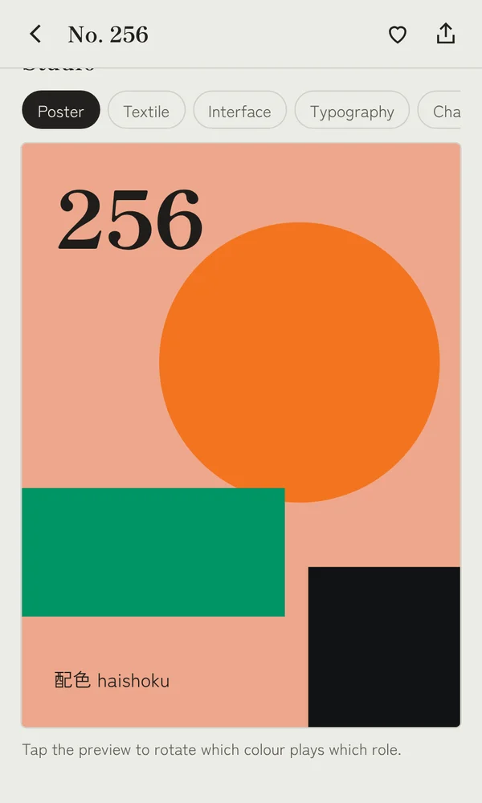
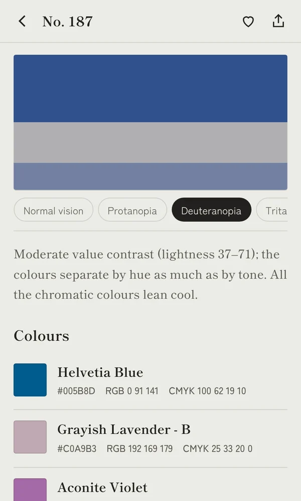
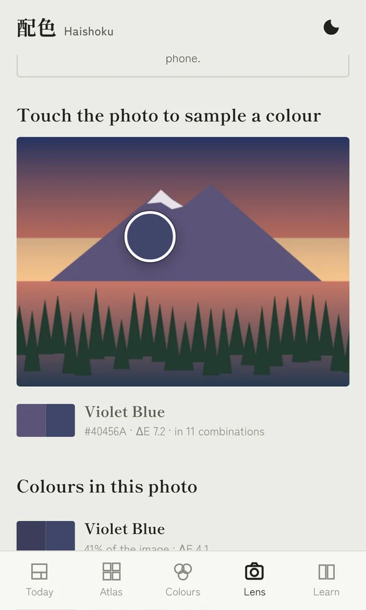
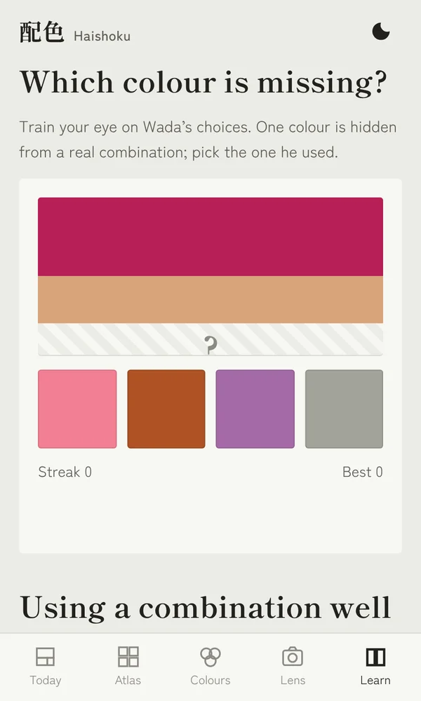

In 1933 the painter Sanzo Wada published one of Japan’s first systematic studies of color harmony. Haishoku turns it into a tool you can design with: preview, check and export every combination on your phone.
Get it on Google PlayEvery combination opens in a Studio that shows it in real use: a poster, a seigaiha wave pattern, an app screen, a type specimen and a chart. Tap to swap which color plays which role.

Preview each combination as people with protanopia, deuteranopia or tritanopia see it, or in grayscale. A WCAG contrast table rates every pair for body and large text.

Lens matches the colors of any photo to Wada’s 159 and shows which of his combinations are already in the scene. Touch a spot to sample it. Your photo never leaves your phone.

One color is hidden from a real combination. Can you pick the one Wada chose? A short history, practical tips and a daily combination round out the app.

Wada Sanzō (1883–1967) was a painter, printmaker and costume designer. He founded the Japan Standard Color Association in 1927, published the six-volume Haishoku Sōkan in 1933–34, and won an Academy Award for the costumes of Gate of Hell. His combinations still shape how designers think about color.